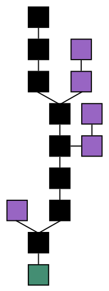

La blockchain: introduction et cas d'usage
Luc Yriarte
ThingAgora /
Civis Blockchain
Plan
- Caractéristiques générales
- Principaux systèmes
- Cas d'usage
Définition et caractéristiques générales
La blockchain est un système décentralisé de validation de transactions.
- Réseau peer to peer
- Usage de la cryptographie
- Registre distribué
Réseau peer to peer
Chaque noeud de réseau, ou peer
- Traite des transactions
- Valide un bloc de transaction en consensus avec ses peers
- Détient une copie du registre des transactions, ou ledger
Liens
{kind=link}
Usage de la cryptographie
- Cryptographie standard à clé symétrique
- Cryptographie à clé asymétrique
- Fonction de hachage et empreinte numérique
Généralement les blockchains se basent sur les clés privées pour signer les transactions, et sur les fonctions de hachage pour construire les blocs.
Liens
Registre distribué
- Fonction de hash
- Transactions groupées en blocs
- Blocks chainés par les hash
Chaîne de blocs
{kind=link}
Chaîne principale
{kind=link}
Principaux Systèmes
- Bitcoin
- Ethereum
- Hyperledger
Bitcoin
Satoshi Nakamoto 2008
- Crypto monnaie
- Proof of work
- Mineurs
- Stateless / UTXO
| Valeur Bitcoin | Cout transaction | |
|---|---|---|
| 2020 | $10075 | $0.71 |
| 2019 | $7800 | $4.60 |
| 2018 | $17000 | $15 |
| 2016 | $430 | $0.04 |
| 2014 | $760 | $0.08 |
305G, 616k blocks, 13k transactions / 6 blocks / heure
Bitcoin transactions
{kind=link}
Liens
Ethereum
Vitalik Buterin 2013
- Smart contracts
- Solidity language
- Ether / Gas
- Decentralized Autonomous Organization
| Valeur Ether | Cout transaction | |
|---|---|---|
| 2020 | $226 | $0.13 |
| 2019 | $245 | $0.15 |
| 2018 | $1000 | $1 |
| 2016 | $1 | $0.001 |
| 2014 | $3 | $0.001 |
224G, 9.5M blocks, 26k transactions / 270 blocks / heure
Liens
Hyperledger
Linux foundation 2015
- Cryptologie asymétrique, consortium, certificats
- Architecture modulaire
- Practical Byzantine Fault Tolerance
- Spécialisation des peers validateurs, ordonnanceurs
Hyperledger world view
{kind=link}
Network architecture example

Blockchain application

{kind=link}
{kind=link}
Liens
Cas d'usage
- Crypto-monnaies, tokens
- Administration dématérialisée
- Traçabilité
- Objets connectés
Crypto-monnaies et tokens
- Altcoins
- Marketplaces
- Initial Coin Offering
Administration dématérialisée
- Données personnelles, identité, médicales...
- Transactions immobilières, cadastre...
- Vente en ligne, particuliers
- Traçabilité
Signature digitale
{kind=link}
Objets connectés
- Données de capteurs, hash
- Déclenchement d'actions automatisées
- Traçabilité
- IOTA / Tangle
Tangle
{kind=link}
Liens
Conclusion
- Apports de la blockchain: immutable et décentralisé
- Applications dans l'IoT
- Blockchain publique vs consortium
Utilité de la blockchain ?
- Plusieurs parties impliquées
- Données partagées
- Intérêts potentiellement contradictoires
- Transactions entre les parties
- Interactions bien normalisées
- Besoin de conserver un historique